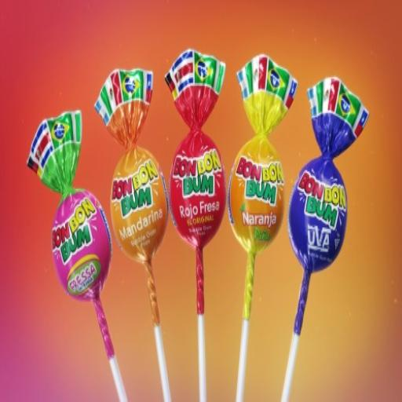

DULCES
 |
$1.200Halls es una marca que se dedica a la elaboración, desarrollo y comercialización de caramelos duros sin azúcar diseñados no solo para el consumo popular y placentero gracias a su gama de sabores cítricos, mentolados y de miel y limón, sino que las propiedades de todos estos ingredientes los convierte en efectivos productos de uso médico para el tratamiento y alivio de problemas relacionados con la tos y el dolor de garganta agudo. La compañía nace en 1963 en Estados Unidos, donde pronto se consolidó como la principal marca para ayudar a refrescar y relajar la irritación de garganta. Antes de esto, la empresa, que era propiedad de los hermanos Halls, surgió al mundo con la idea firme de fabricar jabones y mermeladas. Muy pronto se instauraron en el negocio de la confitería con la creación de pastillas de chocolate, caramelos de menta y caramelos de leche y azúcar.
La compañía de productos Halls ha sido pionera en la innovación y el desarrollo constante de caramelos que cumplieran una función más allá incluso de lo estrictamente relacionado a lo comúnmente conocido. De esta forma, en 1990 dieron lugar al primer caramelo para la tos con sirope balsámico en su interior, una sustancia que aliviaba al instante la tos seca y compulsiva. Los productos Halls, todos ellos mentolados por entonces, poseían un refrescante sabor a mentol con acción descongestionante que proporcionaba un alivio efectivo de nariz y garganta. Así, sus productos cumplen una doble función: en los países más fríos, Halls es un producto medicinal autorizado por el propio mercado libre, mientras que en los países y zonas más cálidas se trata de un caramelo refrescante que deja un aliento y sabor intenso, sirviendo como solución eficaz frente a los problemas serios de halitosis.
¿Qué productos ofrece Halls
Halls ofrece todo una gama de productos destinados al tratamiento médico para los síntomas de la tos irritativa o la tos seca. Sus caramelos ofrecen 8 horas de alivio continuado gracias a la combinación de las propiedades de la menta, la miel, el limón y otros muchos cítricos. Se trata de pastillas cuadradas de vía oral cubiertas individualmente para su mejor conservación y empaquetadas en un formato rectangular con diez caramelos en su interior. Uno de sus más populares productos, las Halls negras, se trata de un potente caramelo que refresca y alivia de forma rápida y eficaz el dolor de garganta, frena la tos y descongestiona la nariz taponada a causa del catarro o gripe. Todos los productos son fabricados y elaborados sin azúcar.. |
 |
$400En el Valle del Cauca (Colombia), en la década de los años 30, el empresario Hernando Caicedo aprovechó la riqueza agrícola de su departamento para producir dulces y confites tropicales que desde sus inicios empezaron a conquistar el paladar de los colombianos y dio origen a la tan conocida Colombina, la marca donde el sabor es infinito.
Una década más tarde, Jaime Hernando Caicedo, hijo de don Hernando, tomó el mando de la dulce fábrica de su padre y con una mirada internacional logró realizar exportaciones de sus productos al mercado estadounidense y europeo, convirtiéndose así en la primera empresa suramericana de dulces capaz de colocar sus productos en el viejo continente.. |
 |
$400la clásica chupeta colombiana Bon Bon Bum cumple 50 años en el mercado nacional. A través del tiempo, ha logrado posicionarse como el bombón dulce relleno de chicle más comercializado en el país y ser el producto insignia de la empresa Colombina.
El origen de este dulce está en los campos de caña en el Valle del Cauca. En los años 20, Hernando Caicedo aprovechó la capacidad agrícola del departamento, sus cálidas temperaturas, la calidad y la fertilidad de sus suelos, para producir toda clase de dulces y confites con sabores a frutas tropicales que lograron conquistar a generaciones de consumidores. |
 |
$100Aunque aún nuestro consumo representa la décima parte de la ingesta de un país europeo el auge por el chocolate se saborea. Por este motivo Bianchi una de las marcas más queridas por el público en Latinoamérica lanza su línea de chocolates, una línea pensada en estrenar combinaciones con chocolate todos los días. |
 |
$200Barrilete Esta barra tipo goma dulce fue muy popular en los años 90 y principios de los 2000. Hace parte de la marca de dulces colombiana Súper, creada en 1948 en Manizales, que comenzó fabricando chicles y turrones de coco. En 1990 crean el barrilete, una barra masticable tricolor. |
 |
$400Desde hace más de 50 años, estos caramelos blandos con sabor a frutas han acompañado a chicos y grandes. Con su variedad de sabores (fresa, mora, piña, limón, entre otras) y su sabor que ningún otro producto ha podido imitar las frunas han acompañado a los colombianos desde 1941, cuando Emilio Stern trajo consigo la fórmula alemana para la fabricación de estos dulces. Aunque han pasado por varios cambios, las frunas siguen estando vigentes. |